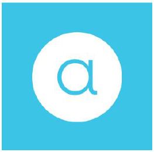

Wordmark and tagline
Keep the tagline close to the
wordmark to emphasize brands' unique personality.
Distance between the logo and the tagline is
measured by the height of the wordmark.
CENTERED ALIGNED
LEFT ALIGNED

highzeal
Brand
guidelines
Preface
Over the past few months, the brand team has been developing a new brand to better reflect the essence of who we are and where we are going as a company. We're excited to share it with you.
In this book you'll find the information and resources to guide customer interactions and develop corporate collateral with the same unique and consistent Acano voice.
This book will continue to evolve. We'll let you know when there is a new version.
If you have any questions about this guide or need templates or assets not included in this book, please send us a note to brand@acano.com.
Agenda
Introduction
Visual identity
Logos
Monochrome and color versions
Clear space
Minimum sizes
Wordmark and tagline
Incorrect use
Dot placement guides
Color palette
Typography
Dotted pattern
Photography
Icons
Illustrations
File formats
File naming
Verbal identity
Applications
Digital
Support
Our purpose
Vision
True collaboration.
We believe that humanity is capable
of extraordinary progress if it truly
acts together.
Mission
Make space for ideas.
Acano works to let people anywhere
solve, create and dream together.
Brand idea
The brand idea is the central guiding
concept that express the essence of
the company.
It defines us and all that we do. It assures people that every time they interact with the company, they have the experience they've been promised.
It's a statement of intent that we use internally to guide our decisions and to inspire us. Our brand idea informs and influesces every medium we empoly - form naming, products and services to advertising, brochures,packaging,and behavior.
Our brand idea is: Create great ideas together.
Human beings are intrinsically problem solves, always looking for ways to change and improve our surroundings.
This ability to come up with solutions to problems is part of every one of us, it is'nt unique to geniuses, artists, or "creative types" Everyone has ideas.
Ideas start small, sometimes just as an inkling, a flashing thought, or an observation. To reach their full potential and deliver value,ideas need to be shared,challenged,discussed,and put into action. It is only then that an initial notion has the possibility to turn into the next great idea.
Great ideas are the result of people putting their minds together.
When we share and build on the contributions of others we start connecting the dots.
Acano is about great ideas; ideas that fuel change,shakeups,and push the human race forward.
Brand expression
"Put your minds together" is the
outward expression of our brand.
Put your minds together is our tagline and the centerpiece of all Acano communications. It emphasizes the human element of our technology that encourages interaction and creativity. It resonates with our current products, as well as our future aspirations.
It's a straightforward, aspirational call to action that inspires how we interact with one another.
Brand personality
Brand personality is the set of
qualities that we want customers
to associate every time they
interact with Acano.
These qualities are the external manfestation of our company and our core values.
These attributes are not a list of words that must be used in all interpretations of the brand. Rather they are the associations that we want customers to make, whenever they interact with the Acano.
Acano is:
Inspiring
We want to change how people collaborate
Daring
We are not afraid to stand out.
Inviting
We have a compelling story.
Captivating
We'll make you fall in love of work, again.
Candid and genuine
We are true to our beliefs.
Logos
The new wordmark is based on the typeface FFMark which is modern, full of personality, and has a mathematical foundation.
We've kept the overall fell of the previous logo, using only lowercase letters to keep the rhythm of circular shapes. We have also maintaned the serifs (legs) in the letter "a" but disconnected all the letters to improve readability.
To echo the circular motif in our wordmark the letter "a" now lives inside a circle which provides it which additional visual weight and creates a proper stamp or monogram.
WORDMARK
MONOGRAM
Monochrome versions: Wordmark
The primary color of the Acano
wordmark and monogram is gray
(PMS Cool Gray 10).
When the wordmark appears in gray or black, it should be placed against a white or light background. Never use color for the wordmark.
PRIMARY
BLACK & WHITE
Color versions: Wordmark
The wordmark is reversed out when used with any color in our palette or over a photograph.
When using over yellow,make sure the wordmark is not smaller than 3cm (or 150 pixels if used on screen application). Only a single, solid color from the color palette may be applied behind the wordmark.
For use over a photograph please be sure there is sufficient contrast and the wordmark is easily legible.
Monochrome versions: Monogram
Similar to the wordmark, when the monogram appears in gray or black, it should be placed against a white or light background.
PRIMARY
BLACK & WHITE
Color versions: Monogram
The monogram can also be used reversed out over any color in our palette or over a photograph.
When using over yellow make sure the wordmark is not smaller than 2cm or 100 pixels, if used on screen application. Only a single, solid color from the color palette may be applied behind the wordmark.
For use over a photograph please be sure there is sufficient contrast and the monogramis easily legible.
Clear space
Everything's calculated in our designs-even the amount of white space.
Having sufficient space around the wordmark and monogram makes our designs look better, and gives the logos the appropriate visual hierarchy.
The clear space of the wordmark is determined by the "x-height",which is a typographic unit that is measured from the baseline to the mean line.
In the monogram, the space is determined by using the diameter of the circle as the x-height value, and then dividing this value in half.
WORD MARK
MONOGRAM
Minimal sizes
Our logos should be always visible.
While our logos can be resized to fit different types of collateral, it's important that you never scale them down below the recommended sizes.
WEB
Wordmark and tagline
Keep the tagline close to the
wordmark to emphasize brands' unique personality.
Distance between the logo and the tagline is
measured by the height of the wordmark.
CENTERED ALIGNED
LEFT ALIGNED
Incorrect use
Don't stretch or condense.
Don't use color.
Don't rotate.
Don't use gradients.
Don't use 3D effects or shadows.
Incorrect use
Don't use as a pattern.
Don't lock in a single unit.
Always mantain the correct clear space around.
Don't place over gradients or photos where there is not enough contrast between the logos and the background.
Dot placement: Stacked
It's easy for us to keep our brand dot in reigns. Give it a little bit of personal space.
The circle or dot is a core element of our brand identity. It is part of the DNA of the workdmark, it represents ideas, and possibilities of collaboration
The dot also is a connector between visual elements. When placing the dot between two paragraphs of text, leave one additional line in between each as clear space.
Joel S. Brunson
CEO, Acano Federal
.
joel.brunson@acano.com
+1 555 555 6666
Dot placement: Side by side
When the dot is placed horizontally between two text paragraphs, the clear space is determined by the height of the two lines of the text. The dot should always be centered vertically to the two lines of text.
If there's only one line of text on one side, then center the dot to the first line.
Dot placement: Authorized partner
The clear space between the logo, dot and the text "Authorized Partner" is determined by the x-height of the wordmark.
Cobranding: Vertical & square logo
The clear space between the wordmark, dot and the partner logo is determined by the x-height of our wordmark. The partner logo should be set in grayscale and scaled to match the optical size of our wordmark.

Cobranding: Horizontal w/symbol
The clear space between the wordmark, dot and the partner logo is determined by the x-height of our wordmark. The partner logo should be set in grayscale and scaled to match the optical size of our wordmark.
Cobranding: Wordmarks
The clear space between the wordmark, dot and the partner logo is determined by the x-height of our wordmark. The partner logo should be set in grayscale and scaled to match the optical size of our wordmark.
Cobranding w/tagline: Vertical & square
The clear space between the wordmark, dot and the partner logo is determined by the x-height of our wordmark. The partner logo should be set in grayscale and scaled to match the optical size of our wordmark.
Cobranding w/tagline: Horizontal w/symbol
The clear space between the wordmark, dot and the partner logo is determined by the x-height of our wordmark. The partner logo should be set in grayscale and scaled to match the optical size of our wordmark.
Cobranding w/tagline: Wordmarks
The clear space between the wordmark, dot and the partner logo is determined by the x-height of our wordmark. The partner logo should be set in grayscale and scaled to match the optical size of our wordmark.
Color palette
A color palette with many possibilities
Our new brand identity is colorful; a true reflection of our personality.
White is the foundation of our color palette. Five more colors form the core palette.
The monochrome and supplemental colors complement the palette and provide a rich foundation to bring any collateral to life.
Typography: Primary typeface
FFMark
Our primary typeface is FFMark. This is a modern reinterpretation of a classic design.
Multiple weights help establish a clear hierarchy and draw the reader's attentation to important content.
Typography: Secondary typeface
Helvetica Neue
Timeless Helvetica Neue serves us mainly in digital, such as our Acano clients. Thanks to it, they're clean and easy to read.
Typography: Usage
Typographic hierarchy organizes type and establishes an order of importance within the content, this helps your reader to easily find what they are looking for and navigate the content.
When setting type we recommended one of these pair combinations to set headers and body copy.
EXTRA LIGHT + REGULAR
Pack my box with five dozen liquor jugs
Cozy lummox gives smart squid who asks for job pen.
LIGHT + BOLD
Pack my box with five dozen liquor jugs
Cozy lummox gives smart squid who asks for job pen.
Dotted pattern
The dotted pattern background works as a core graphical element in Acano brand.
The dots stand for the exchange of ideas and the magic that happens when people work together.
The colors and the grid placement can change to accomodate various artboards and media.
Photography: Lifestyle
Our brand is about people coming together to create and solve, and this is reflected in our photography.
The images we use capture the magic that happens in the interplay between people. The focus is on the people and not the technology.
We capture casual, informal moments where people are having meaningful interactions in the workplace and in non-traditional work settings.
Our imagery is genuine, like our brand - authentic, not stagged, capturing a moment in an editional or cinematic style.
Need photos for an event? we are selecting final images. If you need an image righ away, please contact us.
Photography: Portraits (UIs)
Photography: Product
Icons
Our vector assets are designed
with precision.
They're pixel-perfect and unique, designed for
optimal reading and recognition.
Icon design:
. made from outlines
. stroke size is always 2px
. always scaled proportionaly
Icons
File formats
Brand artwork is supplied in various file formats for different applications. Artwork files are either vector or raster-based.
VECTOR-BASED FORMATS
Vector-based artwork is made up of points and line segments and is high-resolution while maintaining small file sizes. Vector-based files may be scaled up or scaled down. It is best to use vector-based art for page layout programs, printing and large-scale applications (eg.,banners, signage).
AI
Native Adobe Illustrator file.
EPS
Encapsulated Postscript files use Postscript and are vector-based. EPS files can be recognized by many different programs ans systems.
VECTOR-BASED ARTWORK
File formats
RASTER-BASED FORMATS
Raster-based artwork is made up of pixels and can only be scaled down. Use raster-based artwork for screen-based media such as applications (native and web) and in presentations (e.g., PowerPoint).
JPEG
An acronym for the Joint Photographic Experts Group, JPEGs are not transparent and their quality sub-par. We don't use them too often.
PNG
With transparent backgrounds, PNGs are the best choice for use on color or image backgrounds, especially in PowerPoint.
JPEG
TRANSPARENT PNG ON A COLOR BACKGROUND
File naming
If you create any new assets, use our naming convention.
Artwork files for our brand are provided separately as an asset suite. The artwork is in EPS, JPEG and PNG file formats.
Abbreviations are used in our asset file naming so the names won't be so cumbetsome. The different attributes of each file follow in order of importance, always separated by an underscore.
STRUCTURE
acano_type_color_color system.file format
SAMPLE
ac_wordmark_black_cmyk.eps
ACANO
Abbreviated to ac.
TYPE
Use wordmark (all letters) or monogram (single a).
COLOR
We have a brand color palette that consists of: I-yellow (lemon yellow), yellow, orange, red, pink, orchid, violet, blue, s-blue (sky blue), aqua, mint, green, primary (dark grey), white and black.
COLOR SYSTEM
For general printing purpose use cmyk. For the best printing results we use pmsc that stands for Pantone Matching System for Coated Stacks and pmsu which stands for Pantone Matching System for Uncoated Stacks. Screen type is always described with rgb.
FILE FORMAT
For vector files use either ai or eps files. For photography or other graphical elements it's best to use png insted of jpg.
Voice
The way in which we speak, write
and interact with one another
is a reflection of the Acano brand.
The written "voice" communicates the Acano brand personality in every piece of communication.
It is consistent and unchanging (while style considerations, like tone and diction, change according to the situation and the audience).
Our voice is:
Inspiring
. We demonstrate passion about what we do
. elicit an emotional response
. appeal to the aspirational benefits of products and services
Daring
. demonstrate a course of action
. subject comes before verb (avoid passive voice)
Inviting
. speak one-to-one with reader
. convey message concisely
. converse, don't tell
Captivating
. communicate storyline consistently
. translate narrative across all products, service, customer interaction
Candid and genuine
. be emotional, real
. use plain English, including constractions
. minimize tech jargon, acronyms or corporate double speak
. "mom test" (would your mother understand it?)
Tone
The written tone changes based on
the audience and the emotional
state of whom you're addressing.
For example, a writer should use a different tone when addressing on upset customer seeking support, versus an excited new user who just joined Acano.
While the voice always stays the same throughout all communications, tone changes constantly.
Examples:
PRODUCT COPY
Use straight foreard, clear language that makes it easy to understand directions.
Reader:Acano user, potential user.
Tone:Encouraging, supportive, friendly.
"To get started, invite your coworkers. Are there coworkers you can't find on Acano? Invite them here."
CUSTOMER SUPPORT
Be clear and concise. Your priority is to answer. questions quickly, so people can get back to work.
Reader:looking for answers, rushed, stressed.
Tone:Woram, empathetic, educational, helpful.
"How can we help you?"
Style
When writing for an external
audience, double-check that your
content fits the following
considerations for spelling,
grammer, font and capitalization.
. Use American English
. Associated Press (AP) stylebook
. Use our corporate font FF Mark
. Use sentence case
Presentation template
Tell a compelling story.
Our presentation template is simple, colorful and estremely flexible.
Color and layout options give you flexibility to target the content to different audiences, while always maintaining a consistent voice.

Email
Letterhead and business cards
Folder
Datasheet
T-shirts
Wear our brand every day of the week.
T-shirts can be printed on white or color fabrics.
If printing on color fabric, make sure that the fabric matches the colors described in this guide and that our logos can be reproduced acurrately.
Mugs
Dotted mugs are the preferred design since they convey our brand the best way.
Use the white mugs with colorful dots for events and giveaways.
Pencils and pens
Simple, basic design elements make our assets stand out.
Even the smallest tools can have a little Acano personality and charm.
Incorrect use
Don't use other colors not included in this guide for any collateral.
Don't use the dotted pattern over color, dark gray or a black background.
Portable event booth
Booth designs are for special
marketing events, both big and
small.
It's necessary ro adjust advertising to event
capacities. We've designed a small and portable
version that's easy to transport.
Portable event booth
Posters
Large format poster
Roll ups
Support
Can't find the template you need?
You can find assets and templates at: www.inacano.com/files/marketing_new/brand
For any questions about the brand or this guide send us a note to brand@acano.com